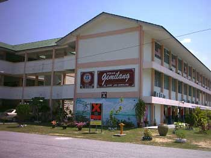

Start my primary school at Sekolah Rendah Rapat Jaya at Ipoh, Perak on 2004 from standard 1 until standard 6 before going for secondary school
Went to tha same school where my mother is a teacher
It was a fun childhood to spend with friends as I involved many activities such as Agensi Antidadah Kebangsaan's camping at 4 days 3 nights, sports day, netball and handball competition
Took my Ujian Peperiksaan Sekolah Rendah here and continue to secondary school
Secondary school on 2011 at Sekolah Menengah Raja Perempuan Ipoh (Raja Perempuan School) at Perak from Form 1 until Form 4
This school is 100% only for girls which it will be weird to see even a boy here
For Form 1 and Form 2, I experienced to go school at the evening which the school start on 1pm until 6pm. This is because they already have Form 1 and Form 2 in the morning as they were hostel's student
When I were Form 3, the school start at the morning session and it have 9 classes which are Avicennia, Azalea, Begonia, Bougainvillea, Camellia, Dahlia, Dahlia, Eugenia and Jasmine
The hostel's student and daily students will be put under same class
My class have 42 students if we were not being separated which we are the class that have many students
On Form 4, I am the part of Account student
At this school I take Peperiksaan Menengah Rendah (PMR)

On 2015, we moved to Kedah and we made a new journey as we never experience things outside from Ipoh other than holiday
So, I went to Sekolah Menengah Kebangsaan Tanjung Pauh, Jitra, Kedah and there are school for girls and boys just like other schools
At this school I took Sport Science subject as they does not provide Economic Principles subject. I got chance to learn new subject which I never heard about this subject before
I took Sijil Pelajaran Malaysia (SPM) here and created more memories with new friends even we just sat in same class for a year
After we got SPM's result, we applied to UPU system. For the result I got to continue my study at UiTM Kedah, Sungai Petani
I continue my study in Diploma of Library Science (IM120) under Faculty of Information Management (IM) and now, I am at the last semester which it only have 4 semester
Met a lot of people as to help me grow, be more matured and to look the world clearer. Gain experiences and also, say to more journey waiting!